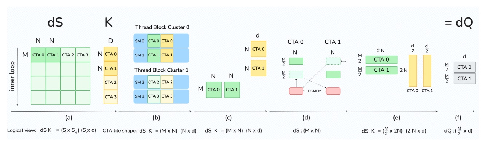
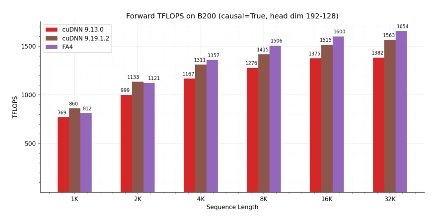
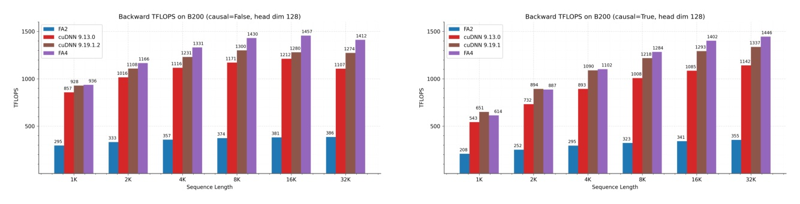
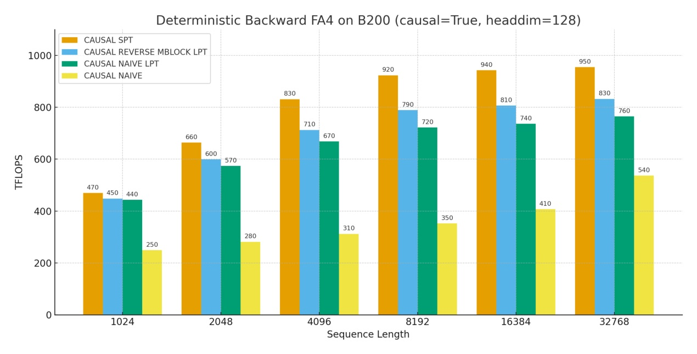

FlashAttention-4
Blackwell 讓 tensor core 變太快，attention 的瓶頸被擠到 softmax / SMEM / atomics。
FA4 的貢獻是把 algorithm、pipeline、TMEM、2-CTA MMA、CuTe-DSL 一起重排，而不是只寫一個更快的 matmul kernel。
FlashAttention-3 的成功假設，在 Blackwell 上不再完整成立
- Hopper/FA3 的重點是 asynchronous execution 與 warp specialization；Blackwell 又引入 TMEM、128x128 MMA tile、fully async tensor core、2-CTA MMA。
- B200 BF16/FP16 tensor core peak 從 H100 的 1 PFLOPS 到 2.25 PFLOPS，但 MUFU exponential 與 SMEM bandwidth 沒有同步成長。
- 典型 Blackwell attention workload 中，SMEM traffic 與 exponential ops 會比 MMA compute 多 25–60% 執行時間。
- 所以「移植舊 kernel」會留下性能，甚至因 Hopper MMA instruction forward compatibility 而不可行。
不對稱 scaling：MMA 翻倍，非-MMA 原地踏步
| hardware unit | B200 / Blackwell | Hopper / context | implication |
|---|---|---|---|
| BF16 tensor core | 8192 ops/clock/SM | 4096 ops/clock/SM | MMA 不再是唯一慢點 |
| MUFU exponential | 16 ops/clock/SM | same as Hopper | softmax exp 追不上 tensor core |
| SMEM read | 128 bytes/clock/SM | same as Hopper | operand traffic 變成 backward 主瓶頸 |
| TMEM | 256 KB / SM | Hopper accumulator in registers | 允許更大 tile 與 async accumulator |
FA4 把四個瓶頸分別對應到四種 kernel 動作
- Overlap: forward/backward pipeline 改成最大化 async MMA、softmax、memory ops 的重疊。
- Exp throughput: 用 FMA polynomial partial emulation 補 MUFU。
- Rescale work: online softmax 加 threshold slack，跳過不必要 rescale。
- SMEM / atomics: 2-CTA MMA + DSMEM 重排 dQ，降低 operand traffic 並減半 global atomic reductions。
- Developer loop: CuTe-DSL Python 寫完整 kernel，compile time 20–30x faster。
Figure-first: forward pass 讓 softmax 與 tensor core ping-pong

設計點：兩個 128-thread softmax warpgroups，每個 thread 處理整列；correction warpgroup 把 output rescaling 移出 critical path。
Forward 的兩個主瓶頸：MMA 與 exp 幾乎同級
| tile | MMA compute | SMEM | exp unit | read |
|---|---|---|---|---|
| 128 x 128 x 128 | 1024 cycles | 768 cycles | 1024 cycles | well-balanced，但 exp 已同級 |
| 256 x 128 x 128 | 2048 cycles | 1536 cycles | 2048 cycles | large tile 仍要 overlap softmax |
TMEM 不只是新記憶體，是 pipeline 排程空間
- Blackwell MMA accumulator 直接寫到 TMEM，而不是 Hopper 那樣寫 registers。
- FA4 選擇「兩份 S tile overlap with P」，可在 pipeline 開頭立即連算兩個 S tiles。
- 額外 TMEM 用來傳遞 rescale statistics 給 correction warpgroup。
- 代價是 register pressure：BF16 row-per-thread 需要 128 input registers，還可能有 64 output registers；P store 被拆成前三季與最後一季。
FA4 不等 MUFU：用 FMA 軟體模擬一部分 exp
分解
- integer part: IEEE 754 exponent bits shift/add
- fractional part: polynomial `Σ pixfraci`
- Horner + FMA，和 MUFU 並行
工程取捨
- 不是全量替代 MUFU；只對 10–25% entries partial emulation
- 避免 register pressure / latency / spills 抵消 throughput 收益
- fraction 依 tile 的 MMA/exp throughput ratio 調參
Polynomial exp 可行的原因：BF16 已經吃掉大部分誤差
| method | FP32 max rel err | BF16 max rel err | interpretation |
|---|---|---|---|
| Ideal FP64 to BF16 | — | 3.89e-3 | BF16 quantization floor |
| Hardware MUFU.EX2 | 1.41e-7 | 3.89e-3 | 硬體 exp 也被 BF16 floor 主導 |
| Degree 3 | 8.77e-5 | 3.90e-3 | FP32 較差；BF16 幾乎不差 |
| Degree 5 | 1.44e-7 | 3.89e-3 | FP32 接近 MUFU；多兩個 FMA |
Conditional rescaling：少做中間工作，最後再校正
傳統 online softmax
- 每個 block 維護 running max `mj` 與 normalizer `lj`
- 當 `mj` 變大，就用 `exp(mj-1-mj)` rescale 舊 output
FA4 slack
- 只有 `mj - mj-1 > τ` 才 rescale
- τ 通常 `log2(256)=8.0`
- 最後用 true `mfinal` / `lfinal` normalization 修正
Backward 是五個 MMA 的排程問題

FA3 因 accumulator 在 registers，S → dP → dV → dQ → dK 幾乎被序列化；FA4 用 TMEM reuse 讓上一 iteration 的 dQ/dK MMA 和目前 softmax/elementwise 重疊。
Backward 的真正敵人是 SMEM traffic
| mode | MMA compute | total SMEM | exp unit | read |
|---|---|---|---|---|
| 1-CTA M=128 | 2560 cycles | 3328 cycles | 1024 cycles | SMEM 比 MMA 高約 30% |
| 2-CTA M=256 | 2560 cycles | 2688 cycles | 1024 cycles | SMEM 只比 MMA 高約 5% |
DSMEM 交換半個 dS tile，解掉 dQ reduction-axis 衝突

- M=256 tile 中，兩個 CTAs 各 staging operand B 的一半。
- dQ 的 reduction axis 本來和 2-CTA split 衝突；FA4 透過 DSMEM repack dS。
- 每 CTA 只寫半個 dQ tile，因此 global atomic reductions 減半。
Load imbalance 也被當成 kernel 設計的一部分
- Causal mask 下，標準 left-to-right grid 會讓 SM 從短 tile 做到長 tile，尾端 makespan 變差。
- FA4 對 forward 採 LPT: batches outermost、heads swizzle 成 L2-friendly sections、mblocks reverse order。
- 在 H200 BF16/head dim 128，作者量到 MHA +4–8% FLOPS、MQA 8 +7–14%。
- Deterministic backward 採 SPT-like order，避免 CTA 第一個 dQ write 就等待 semaphore。
CuTe-DSL 把 kernel iteration loop 從分鐘級拉回秒級
| kernel | FA3 C++ templates | FA4 CuTe-DSL | speedup |
|---|---|---|---|
| Forward | 55s | 2.5s | 22x |
| Backward | 45s | 1.4s | 32x |
- Python source lowers to PTX, then ptxas emits SASS。
- Direct PTX escape hatch 保留 low-level expressivity。
- 作者表示 FlexAttention / block-sparse variants 已能建在 FA4 framework 上。
FA4 的皇冠頁：把非-MMA 單元從「配角」提升成設計主軸。
Forward 用 exp partial emulation + conditional rescale；backward 用 TMEM/2-CTA/DSMEM 降 SMEM 與 atomics；scheduling 再把 causal/varlen 的 load imbalance 收掉。
實驗不是端到端 serving，而是 kernel TFLOPs / runtime
- Hardware: NVIDIA B200；BF16/FP16 attention。
- Baselines: PyTorch, FlashAttention-2, Triton with B200-specific instructions, Gluon, cuDNN 9.13。
- Sequence length: 1k, 2k, ..., 32k；batch size 讓 total tokens = 32k。
- Hidden dim 2048；head dim 64 或 128；DeepSeek V3 設定為 Q dim 192 / KV dim 128、16 heads。
- Backward FLOPs 以 forward FLOPs x 2.5 計，因 backward 有 5 個 matmuls。
Forward: head dim 128 上，FA4 對 cuDNN 9.13 有 1.1–1.3x

Forward: Q=192 / KV=128 的非標準 head shape 也納入測試

這頁的價值是提醒：kernel 不是只為 textbook head_dim=128 寫，FA4 也針對實際模型形狀測試。
Backward: speedups 支撐 2-CTA / TMEM / DSMEM 設計

Determinism 不是免費，但排程能少付一點代價

Semaphore lock 需要 memory fence 與等待；SPT / swizzling 的目標是減少 CTA 在第一個 dQ write 就堵住。
主結果要用精確語氣讀，不能外推成整個模型加速
| metric | reported value | scope | source |
|---|---|---|---|
| Peak throughput | 1613 TFLOPs/s · 71% peak | B200 BF16 attention | Abstract p.1; §5 p.14 |
| vs cuDNN | 1.1–1.3x | cuDNN 9.13.0, forward | Fig.4 p.15 |
| vs Triton | 2.1–2.7x | B200-specific Triton | Fig.4 p.15 |
| Deterministic backward | up to 75% | of nondeterministic 1-CTA | §5.2 p.16 |
幾個不能被 headline speedup 遮住的限制
- FA4 是 Blackwell-specific co-design；作者只說部分 algorithms 可能延伸到其他 accelerators。
- 實驗主體是 kernel runtime / TFLOPs，不是完整 LLM serving latency 或 training throughput。
- Figure 4 caption 說 newer cuDNN versions 已吸收多個本文技術並達到相似 performance，所以相對優勢有版本依賴。
- Exp emulation 只能 partial；全量可能因 register pressure / spills 抵消收益。
- Deterministic backward 最好也只有 nondeterministic 1-CTA 的 up to 75%，不是免費 reproducibility。
硬體不對稱 scaling 是全文出發點
Although Blackwell B200 doubles the tensor core throughput compared to Hopper H100 (2.25 PFLOPS vs. 1 PFLOPS for FP16/BF16), other functional units ... scale more slowly or remain unchanged.
Blackwell 把 tensor core 峰值翻倍，但 SMEM / exponential / ALU 沒有同步翻倍，attention bottleneck 因此轉移。§1 p.2
非-MMA 資源主導 runtime
for typical attention workloads on Blackwell, surprisingly, shared memory traffic and exponential operations now dominate execution time, exceeding MMA compute by 25-60%.
在 Blackwell 上，SMEM traffic 與 exponential operations 會比 MMA compute 更支配執行時間，超過 25–60%。§1 p.2
Polynomial exp 的數值理由
The BF16 quantization error dominates for all degrees ≥3.
degree ≥3 的 polynomial exp 在 BF16 下主要誤差已由 BF16 量化決定，而不是 polynomial approximation 本身。Table 2 p.8
Backward pipeline 的重疊重點
With this new pipelining ordering, we can compute the element-wise dS of the current tile in parallel with the dQ MMA of the tile from the previous iteration.
新的 backward pipeline 讓目前 tile 的 element-wise dS 與上一個 tile 的 dQ MMA 並行，靠 TMEM/DSMEM 重排計算圖。§3.2.3 p.12
CuTe-DSL 的迭代速度價值
FlashAttention-4 reduces compile time by 20-30x compared to FlashAttention-3.
FA4 的工程價值之一是把 kernel iteration loop 加速 20–30x，讓實驗與 debugging 不再被 C++ template compile time 拖住。§4 p.14; Table 4 p.14
明日輪轉：模型壓縮 / 效率
量化、蒸餾、pruning；會優先挑 accepted paper 且有紮實 ablation / mechanism。